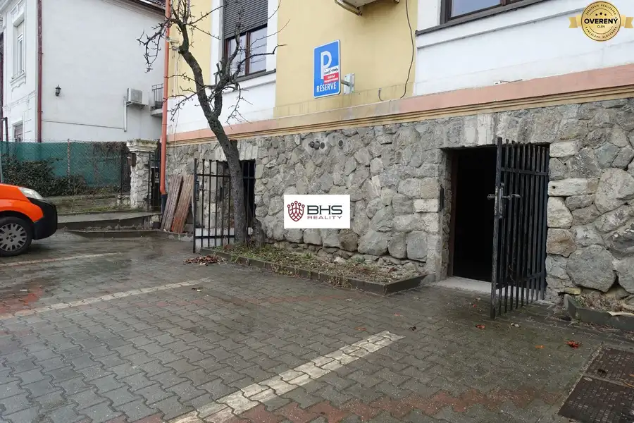
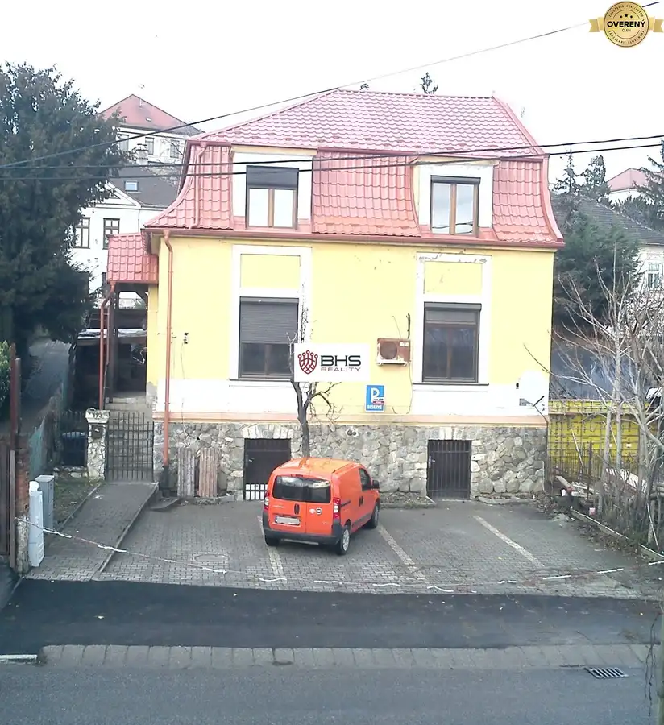
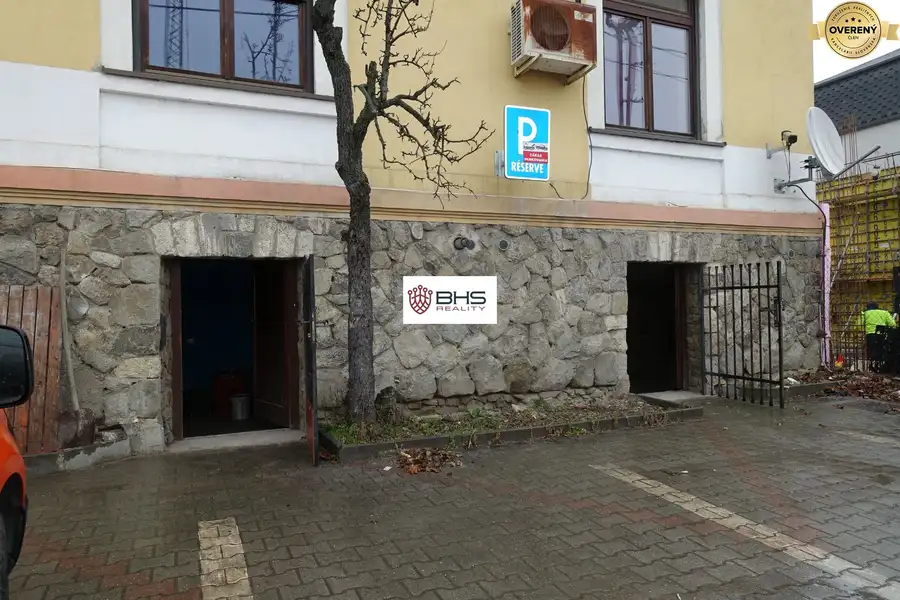

PRENÁJOM – parkovacie státia, Jaskový rad, Bratislava III
Nové Mesto, Bratislava



- Vlastníctvoosobné
O nehnuteľnosti
BHS Reality ponúka na prenájom parkovacie státia pri rodinnom dome na ulici Jaskový rad, mestská časť Bratislava III – Nové Mesto, katastrálne územie Vinohrady. Parkovacie státia sa nachádzajú priamo pri hlavnej ceste. Ponúka sa aj možnosť prenájmu skladovacích priestorov na prízemí uvedeného rodinného domu.
K dispozícii sú celkom 4 parkovacie státia, z ktorých je jedno rezervované pre nájomníka využívajúceho prenájom skladovacích priestorov v rodinnom dome, ostatné 3 parkovacie miesta sú k dispozícii, nezávisle od nutnosti prenajatia skladov.
Cena prenájmu 1 parkovacieho miesta je 70,-Eur/mesiac.
V prípade záujmu prenájmu skladovacích priestorov na prízemí domu v celkovej výmere 45 m2 a jedného parkovacieho miesta (ku skladom) je cena 340,-€/mesiac.
Pri podpise nájomnej zmluvy za jedno parkovacie miesto sa hradí: nájom na mesiac vopred (70,-€) + kaucia - vratná na konci nájmu (70,-€) + provízia RK (70,-€).
Informácie : Iva Bedejová, tel. č.:
Patríme (BHS Reality) k členom Realitnej únie SR a ZRKS. S nami získavate garanciu profesionálnych právnych služieb, komplexného poradenstva a bezproblémového priebehu realizovanej kúpy/predaja/prenájmu.
©Text a fotografie s pôdorysom sú autorským dielom a majetkom realitnej kancelárie BHS Reality, s.r.o..
Parametre
- Vlastníctvo
- osobné
- Status
- aktívne
- Parkovanie
- vlastné vyhradené
- Dátum zverejnenia
- 2024-09-04
Kde to je
Mohlo by Vás zaujímať
 Chaty a chalupyNové
149 900 €PREDAJ – celoročne obývateľná chata - Lazy p. Makytou, pozemok 353 m2
Lazy-pod-makytoucertov, Lazy pod MakytouČertov
3-izbový61 m²
Chaty a chalupyNové
149 900 €PREDAJ – celoročne obývateľná chata - Lazy p. Makytou, pozemok 353 m2
Lazy-pod-makytoucertov, Lazy pod MakytouČertov
3-izbový61 m²
 Rodinné domyNové
750 000 €PREDAJ – dva RD, 7-izb. a 2-izb., Dunajská Lužná, pozemok 966 m2
Dunajská Lužná
7-izbový537 m²
Rodinné domyNové
750 000 €PREDAJ – dva RD, 7-izb. a 2-izb., Dunajská Lužná, pozemok 966 m2
Dunajská Lužná
7-izbový537 m²
 PozemokNové
89 990 €PREDAJ – pozemok pre rodinný dom, 1.142 m2, H. Hámre, okr. Žarnovica
Horné Hámre
1142 m²
PozemokNové
89 990 €PREDAJ – pozemok pre rodinný dom, 1.142 m2, H. Hámre, okr. Žarnovica
Horné Hámre
1142 m²